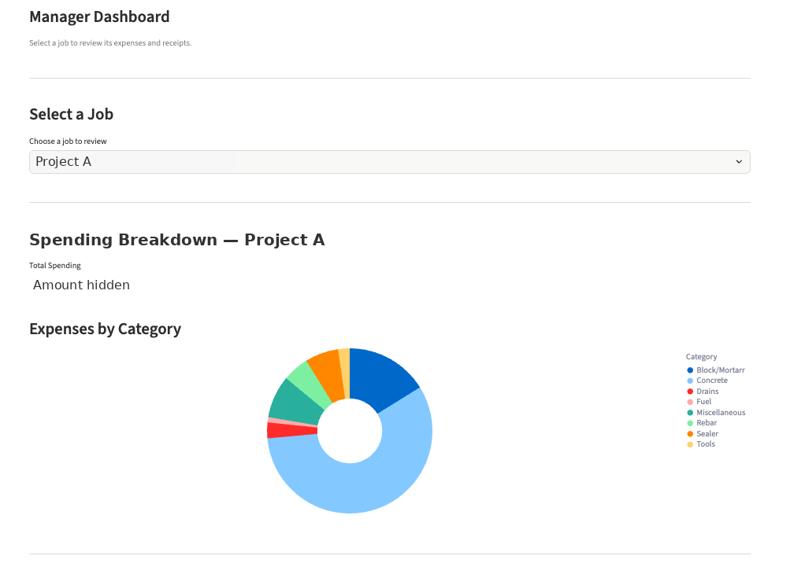
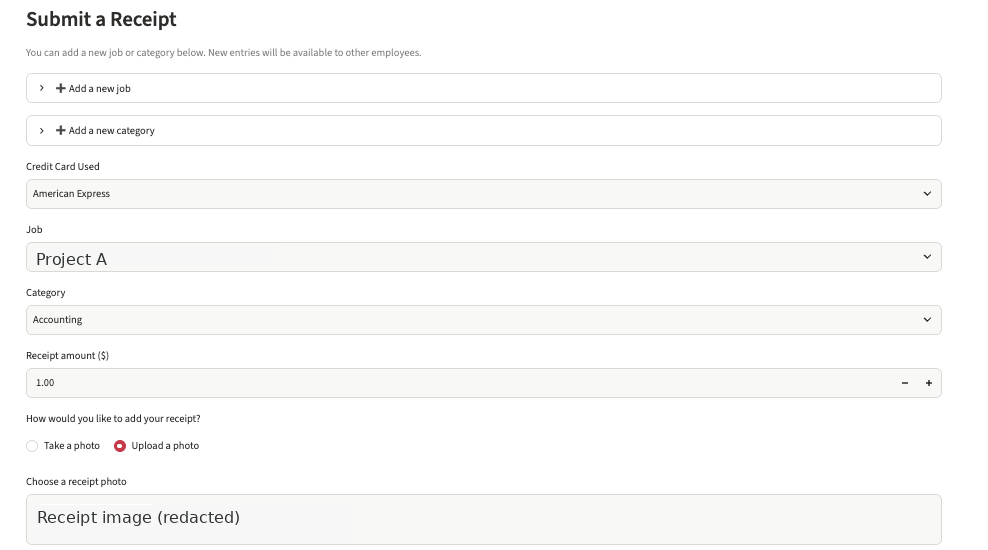

01 · Shipped · 6 Star Concrete
Receipt Tracker
Expense tracking shouldn't depend on a pile of photos and someone remembering which job they belong to.
- Problem
- After discussing workflow pain points with leadership, I focused on employees submitting purchases across jobs and managers needing reliable records for invoicing.
- My product decision
- Capture job, category, payment method, amount, and receipt image at submission. Put job spending—not decorative KPIs—at the center of manager review.
- Next question I'd test
- How often do entries require correction, and how quickly can managers reconcile a job?
A day → 1–2 hrsInvoice preparation time after introducing the workflow, as reported in my project experience.
Built with Python, Streamlit & Supabase; employee/manager permissions. Operational outcome, not a controlled experiment.
Actual interface · sensitive values masked

